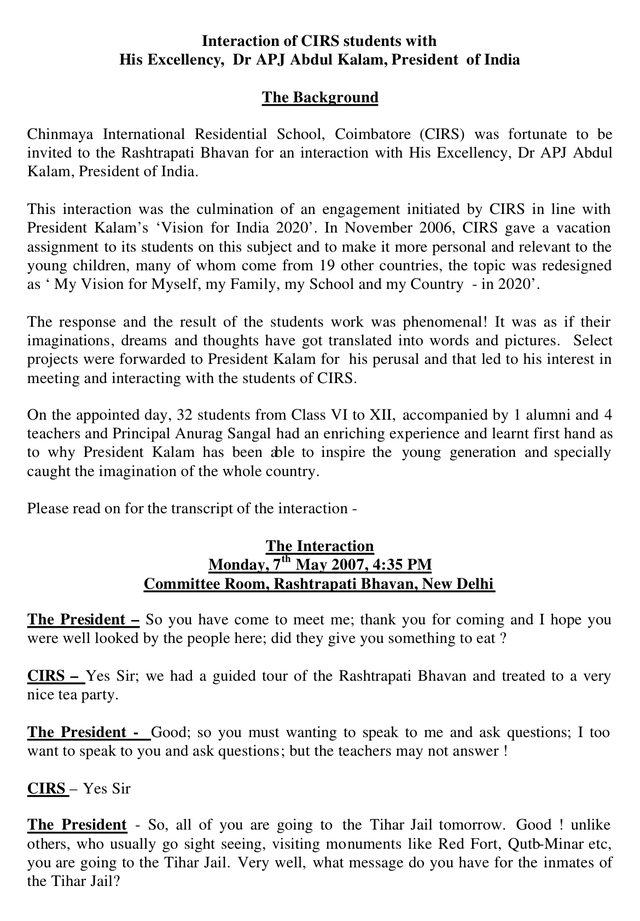

Invited to Rashtrapati Bhavan
An interaction with President A. P. J. Abdul Kalam, New Delhi
A vacation assignment on the President’s ‘Vision for India 2020’, recast by the school as ‘My Vision for Myself, my Family, my School and my Country’, led to an invitation: thirty-two students from Classes VI to XII met President Kalam in the Committee Room of Rashtrapati Bhavan.